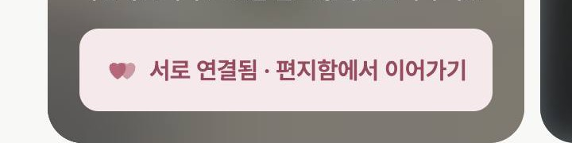
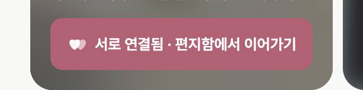
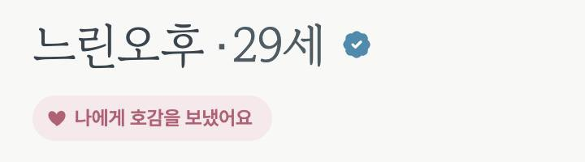
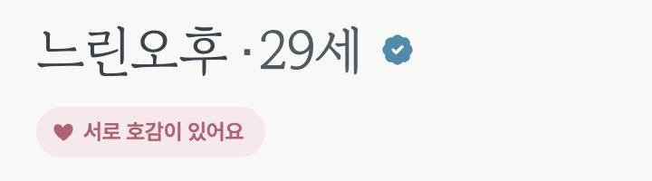
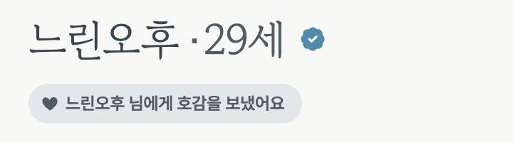

| 자리 | 예전 | A · 데모에 넣음 |
|---|---|---|
| 홈 · 서로 연결됨연 카드 안 버튼 |  |  |
| 프로필 · 받은 호감"나에게 호감을 보냈어요" |  | |
| 프로필 · 서로 호감"서로 호감이 있어요" |  | |
| 프로필 · 보낸 호감"OO 님에게 호감을 보냈어요" · 회색 |  |
지금은 하나만 보내면 "보냄"으로 줄어 왼쪽에 작게 붙고, 둘 다 보내면 "호감 보냄 · 편지 보냄"이 돼서 경우마다 모양이 달라요. 바꾼 안은 항상 반반, 끝난 칸은 "호감 보냄" · "편지 보냄"으로 같은 이름이고, 자리도 호감 왼쪽 · 편지 오른쪽으로 고정이에요. 색은 실제 버튼과 같게: 흰 바탕 + cool-neutral-200 선 + sky-700 글자, 하트는 장미 · 체크는 sky-700. 다만 방금 홈 카드에서 호감 · 편지 버튼을 뺐기 때문에, 지금 데모에서는 이 줄이 나오는 화면이 없어요. 나중에 다시 쓰게 되면 이 규칙으로 할게요.
| 상황 | 지금 | 바꾼 안 |
|---|---|---|
| 호감만 보냄 | 보냄편지 보내기 | 호감 보냄편지 보내기 |
| 편지만 보냄 | 보냄호감 보내기 | 호감 보내기편지 보냄 |
| 둘 다 보냄 | 호감 보냄편지 보냄 | 호감 보냄편지 보냄 |